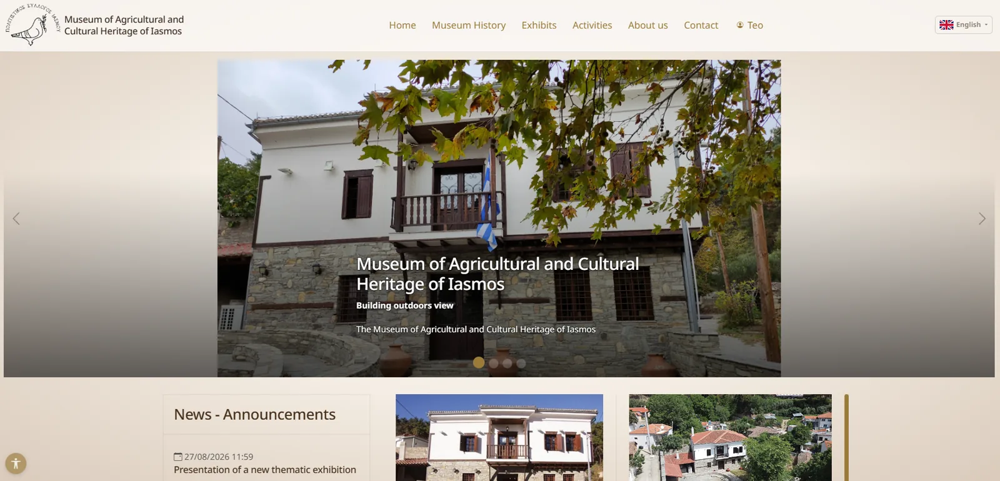
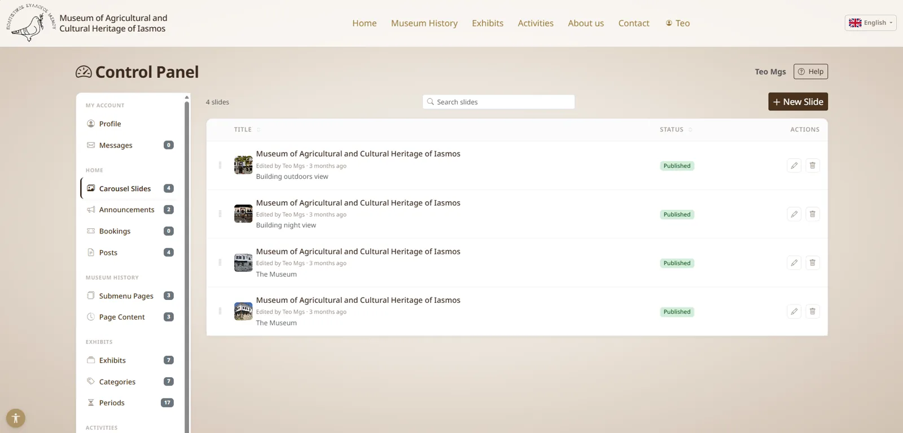

Public site — bilingual (EL/EN) with staff-managed carousel and announcements
Iasmos Culture Club Museum
Client project — bilingual museum platform
Full-stack Django site built for a museum client in place of an off-the-shelf CMS, so every part of the site — exhibits, events, pages, team, media — is editable by their own staff through a purpose-built moderator dashboard with role-based access and soft-delete recovery.
Python
Django
PostgreSQL
django-modeltranslation
django-axes
Docker
Nginx
Gunicorn